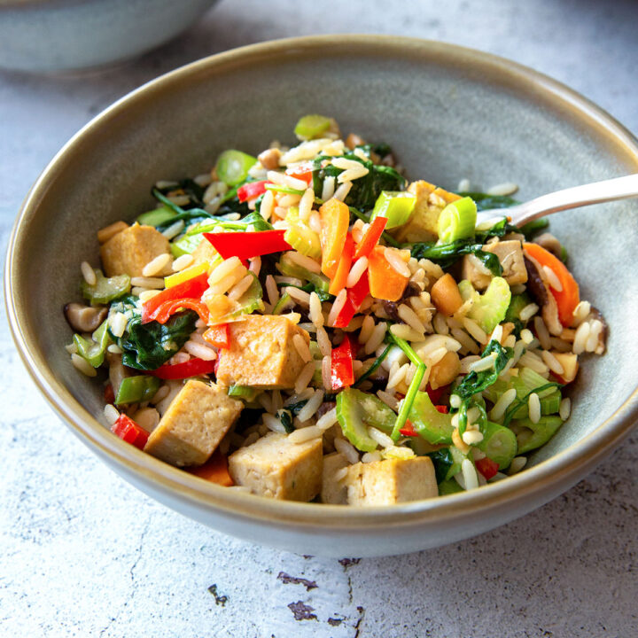

Tofu Rice

Rice, fresh vegetables and tofu bring together a fresh and healthy combination for your dinner.
Ingredients
- Rice
- Tofu, smoked if u like
- Zucchini
- Pepper
- Salt and Pepper
- Soy sauce
- Sesame oil
- Any vegetables you like to add
Steps
- Put the rice in a pot, add water and let it cook
- Cut the zucchini, pepper and tofu
- Add oil in a pan, put the vegetables in it
- Let them cook for a few minutes
- When the rice is ready put it in the pan
- Add soy sauce and sesame oil
- Then add salt and pepper, also other spices you like. I like to add some parsley and cayenne pepper
- Bon appétit.
Home